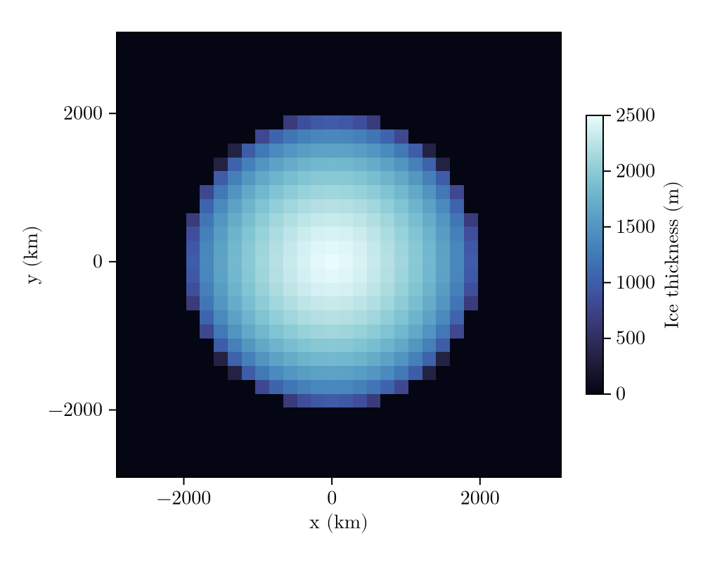
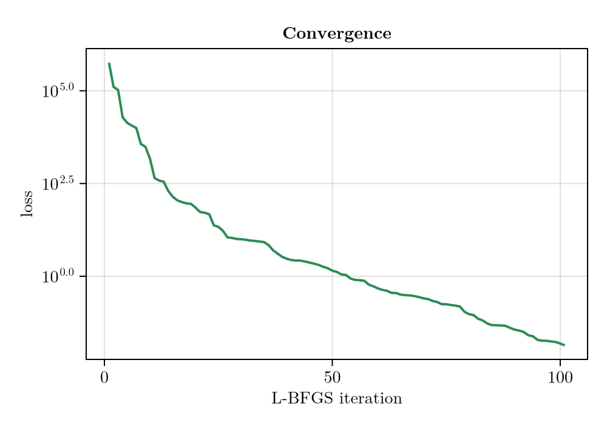
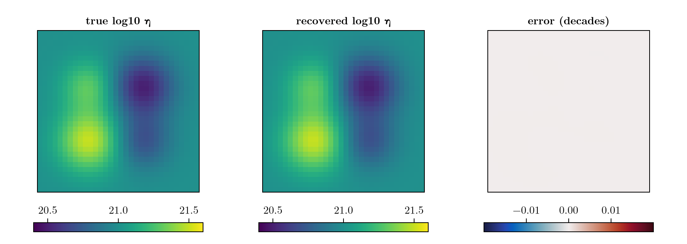

Inverse calibration
The previous examples all ran FastIsostasy forward: given an ice-loading history and a solid-Earth structure, compute the deformation and sea-level response. This example goes the other way. Given observations of the surface response and a known ice history, we recover the unknown solid-Earth parameters — the mantle viscosity structure and the densities — that produced them. This is an inverse problem, and it is the typical setup when tuning a GIA model against a more expensive 3-D reference model or against geophysical data. It is also the gentlest entry point into inversion: the ice load is fixed and known, so only the Earth is being asked for.
FastIsostasy solves inverse problems by automatic differentiation (AD): the entire forward model is differentiable, so we can compute the exact gradient of a data-misfit objective with respect to the unknown parameters and hand it to a gradient-based optimizer (here L-BFGS from Optim.jl). This is far more efficient than derivative-free or ensemble methods once the number of parameters grows.
The unknowns are not the raw model fields but a low-dimensional, physically meaningful encoding of them. Here that is a Test2Encoding, 19 parameters in total:
- a background
log10(viscosity)plus four Gaussian viscosity anomalies, each with a centre(μₓ, μᵧ), a widthσand an amplitude, and - the upper-mantle and lithosphere densities
ρ_uppermantle,ρ_litho.
Since the ice load is known, the problem is a ParameterInversion. We observe the vertical uplift over the full field at several times — a rich (x, y, t) dataset that, as we will see, constrains even the viscosity/density trade-off that is often degenerate with sparser data. As in the two examples that follow, we generate synthetic "observations" by running the forward model with a known ground-truth parameter vector, then check that the inversion recovers it.
using FastIsostasy, CairoMakie, Optim
import Enzyme # loading Enzyme activates the AD extension;import (not using) avoids clashing its gradient! export with FastIsostasy's
using Random: seed!
using PrintfFixed configuration and the known ice load
We work on a 32×32 regional grid over a $6000 \, \mathrm{km} \times 6000 \, \mathrm{km}$ domain and a $10 \, \mathrm{kyr}$ glacial cycle, defined by five time knots placed asymmetrically so that the rapid deglaciation at the end of the cycle is resolved. The ice load is a single broad Vialov dome ($2000 \, \mathrm{km}$ radius) whose thickness follows the glacial-cycle sawtooth — broad enough that all four viscosity anomalies sit under load and are therefore sensed by the deformation.
A real glacial cycle lasts on the order of $100 \, \mathrm{kyr}$, and that is what this setup is meant to represent — read the knot times as a cycle compressed by a factor of ten, not as a physically distinct scenario. Nothing in the model forces the shortcut: multiply knot_times, t_span and obs_times by ten and it runs unchanged.
The reason to keep it short is purely the docs build. The step size is fixed at $500 \, \mathrm{yr}$ for AD, so a $100 \, \mathrm{kyr}$ cycle costs 200 steps per forward run instead of 20 — and every L-BFGS iteration pays that tenfold, on top of one gradient each. The inverse problem is structurally identical either way; what changes is how much viscous relaxation the synthetic data actually contain, and hence how strongly they constrain the mantle. A production inversion should use the full $100 \, \mathrm{kyr}$; treat the numbers recovered below as a demonstration of the machinery rather than as an accuracy claim. The same applies to the two inversion examples that follow, which reuse this configuration.
W, n = 3.0e6, 5
domain = RegionalDomain(W, n)
knot_times = [0.0, 5.0e3, 8.0e3, 9.0e3, 1.0e4]
t_span = (0.0, 1.0e4)
# a radially-symmetric Vialov dome H(r) = Hc·max(1 − (r/L)^{4/3}, 0)^{3/8}
function vialov_dome(domain, xc, yc, L, Hc)
r = @. sqrt((domain.X - xc)^2 + (domain.Y - yc)^2)
return @. Hc * max(1 - (r / L)^(4 // 3), 0)^(3 // 8)
end
H_dome = vialov_dome(domain, 0.0, 0.0, 2.0e6, 2.5e3)
sawtooth = [0.0, 0.4, 1.0, 0.5, 0.0]
H_snapshots = [s .* H_dome for s in sawtooth]
fig = plot_load(domain, H_snapshots[3]) # the LGM snapshot
The unknowns and their scaling
The 19 parameters live on wildly different scales: log10(viscosity) is a number around 21, anomaly positions and widths are millions of metres, and densities are thousands of kg/m³. A gradient-based optimizer is badly conditioned unless we work in dimensionless variables of order one. Every encoding takes a scale vector for exactly this: the physical value of parameter i is θ[i] * scale[i], so the optimization variable θ is O(1) while the physics sees the true magnitudes.
gscale = [1.0e6, 1.0e6, 1.0e6, 1.0] # (μₓ, μᵧ, σ, amp) per Gaussian
scales = vcat(1.0, repeat(gscale, 4), 1.0e3, 1.0e3) # + two densities
enc = Test2Encoding(scale = scales)
# ground truth in physical units → normalised
θ_phys = [21.0,
-1.0e6, -1.0e6, 8.0e5, 0.5, # soft anomaly, SW
1.0e6, 1.0e6, 8.0e5, -0.5, # stiff anomaly, NE
-1.0e6, 1.0e6, 7.0e5, 0.3, # soft anomaly, NW
1.0e6, -1.0e6, 7.0e5, -0.3, # stiff anomaly, SE
3400.0, 3200.0] # ρ_uppermantle, ρ_litho
θ_true = θ_phys ./ scales19-element Vector{Float64}:
21.0
-1.0
-1.0
0.8
0.5
1.0
1.0
0.8
-0.5
-1.0
1.0
0.7
0.3
1.0
-1.0
0.7
-0.3
3.4
3.2The simulation template
The inversion repeatedly runs this forward model with different parameters. Two choices matter for AD:
- the fixed-step
EulerIntegrator(forward-mode AD requires a fixed time-step sequence), and - a
SmoothTransitionfor the grounding-line / ocean masks, so the forward map is differentiable rather than piecewise-constant.
The ice interpolation is built from the known snapshots, so ParameterInversion never touches it — reconstruct! for Test2Encoding only writes the viscosity field and the two densities.
function build_sim()
it = TimeInterpolatedIceThickness(knot_times, H_snapshots, domain)
bcs = BoundaryConditions(domain, ice_thickness = it)
se = SolidEarth(domain; lithosphere = LaterallyVariableLithosphere(),
layer_boundaries = [88.0e3], layer_viscosities = [1.0e21])
opts = SolverOptions(; show_progress = false, transition = SmoothTransition(10.0),
integ = EulerIntegrator(dt = 500.0))
nout = NativeOutput(t = Float64[], vars = Symbol[], T = Float64)
return Simulation(domain, bcs, RegionalSeaLevel(), se, t_span;
opts = opts, nout = nout)
end
sim = build_sim() Computation domain: RegionalDomain{Float64, Matrix{Float64}, Matrix{Float64}, CPU}
Physical constants: PhysicalConstants{Float64}
Problem BCs: BoundaryConditions{Float64, Matrix{Float64}, TimeInterpolatedIceThickness{Float64, Matrix{Float64}, TimeInterpolation2D{Float64, Matrix{Float64}}}}
Sea level: RegionalSeaLevel{LaterallyConstantSeaSurface, NoSealevelLoad, ConstantBSL{Float32, ReferenceBSL{Float32, TimeInterpolation0D{Float32}}}, InternalBSLUpdate, GoelzerVolumeContribution, NoAdjustmentContribution, GoelzerDensityContribution}
Solid Earth: SolidEarth{Float64, Matrix{Float64}, Matrix{Bool}, LaterallyVariableLithosphere, ViscousMantle, NoCalibration, CompressibleMantle, FreqDomainViscosityLumping, IncompressibleLithosphereColumn}
Solver options: SolverOptions{SmoothTransition{Float64}, EulerIntegrator{Float64}, ComplexFFTBackend}
GIATools: GIATools{ConvolutionPlanHelpers{Float64, Matrix{Float64}, Matrix{ComplexF64}, FFTW.rFFTWPlan{Float64, -1, false, 2, Tuple{Int64, Int64}}, FastIsostasy.NormalizedPlan{FFTW.rFFTWPlan{ComplexF64, 1, false, 2, UnitRange{Int64}}, 0.0002519526329050139}}, ConvolutionPlan{Matrix{Float64}, Matrix{ComplexF64}}, ConvolutionPlan{Matrix{Float64}, Matrix{ComplexF64}}, ConvolutionPlan{Matrix{Float64}, Matrix{ComplexF64}}, FastIsostasy.EmptyConvolution, FFTW.cFFTWPlan{ComplexF64, -1, false, 2, Tuple{Int64, Int64}}, FastIsostasy.NormalizedPlan{FFTW.cFFTWPlan{ComplexF64, 1, false, 2, UnitRange{Int64}}, 0.0009765625}, FastIsostasy.PreAllocated{Matrix{Float64}, Matrix{ComplexF64}, Array{ComplexF64, 3}}}
Reference state: ReferenceState{Float64, Matrix{Float64}, Matrix{Float64}}
Current state: CurrentState{Float64, Matrix{Float64}, Array{Float64, 3}, Matrix{Float64}}
Netcdf output: NetcdfOutput{Float32, PaddedOutputCrop}
Native output: NativeOutput{Float64}
native t_out: Float64[]
nc t_out: Float32[]
n simulated observables: 0
nx, ny: [32, 32]
dx, dy: [187500.0, 187500.0]
Wx, Wy: [3.0e6, 3.0e6]
extrema(effective viscosity): (1.171875e21, 1.171875e21)
extrema(lithospheric thickness): (88000.0, 88000.0)
Synthetic full-field observations
We observe the vertical uplift at every interior cell, at five times through the cycle — 676 points × 5 times = 3380 measurements constraining 19 parameters. A single observable type is used per inversion (mixing types would make the observation container abstractly typed and break the AD compilation). The data are generated by running the forward model at θ_true.
pts = [CartesianIndex(i, j) for i in 4:29 for j in 4:29]
obs_times = [2.0e3, 4.0e3, 6.0e3, 8.0e3, 1.0e4]
obs0 = Observation(VerticalUpliftObservable(), pts, obs_times,
zeros(length(pts) * length(obs_times)); σ = 0.5)
prob_gt = ParameterInversion(sim, enc, [obs0])
reconstruct!(sim, θ_true, enc)
preds = FastIsostasy.allocate_predictions(prob_gt)
FastIsostasy.forward_predict!(preds, prob_gt)
data = copy(preds[1])
obs = Observation(VerticalUpliftObservable(), pts, obs_times, data; σ = 0.5)
prob = ParameterInversion(sim, enc, [obs])
@printf("loss(θ_true) = %.3e\n", loss(prob, θ_true))loss(θ_true) = 0.000e+00Gradient check and inversion
Before optimising, it is worth confirming that the AD gradient of the loss agrees with a finite-difference estimate — a cheap sanity check that the differentiable path through the model is intact. We perturb the truth to a well-informed initial guess θ0 (≈ 10 % off in the dimensionless variables), compare a few components, and then let solve! minimise the loss with L-BFGS, which calls gradient! under the hood. Because we already work in dimensionless variables, the default optimizer is well conditioned.
seed!(3)
θ0 = copy(θ_true)
θ0[1] += 0.15 * randn() # background viscosity
θ0[2:17] .+= 0.10 .* randn(16) # Gaussian centres / widths / amplitudes
θ0[18:19] .+= 0.10 .* randn(2) # densities (≈ ±100 kg/m³)
fd_dir(p, θ, e; ε = 1e-4) = (loss(p, θ .+ ε .* e) - loss(p, θ .- ε .* e)) / (2ε)
g = similar(θ0)
FastIsostasy.gradient!(g, prob, θ0)
for i in (1, 2, 18)
e = zeros(19); e[i] = 1.0
@printf("θ[%2d]: AD = % .4e FD = % .4e\n", i, g[i], fd_dir(prob, θ0, e))
end
@printf("loss(θ0) = %.3e\n", loss(prob, θ0))
result = solve!(prob, θ0; optimizer = LBFGS(), iterations = 100, store_trace = true)
θ_hat = Optim.minimizer(result)
@printf("loss(θ̂) = %.3e\n", loss(prob, θ_hat))┌ Warning: Using fallback BLAS replacements for (["cblas_ddot64_"]), performance may be degraded
└ @ Enzyme.Compiler ~/.julia/packages/Enzyme/15yPJ/src/compiler.jl:5563
θ[ 1]: AD = -1.1656e+07 FD = -1.1656e+07
θ[ 2]: AD = -6.4566e+05 FD = -6.4566e+05
θ[18]: AD = 4.1263e+05 FD = 4.1263e+05
loss(θ0) = 5.716e+05
┌ Warning: Using fallback BLAS replacements for (["cblas_ddot64_"]), performance may be degraded
└ @ Enzyme.Compiler ~/.julia/packages/Enzyme/15yPJ/src/compiler.jl:5563
loss(θ̂) = 1.376e-02fig = Figure(size = (500, 350))
ax = Axis(fig[1, 1], xlabel = "L-BFGS iteration", ylabel = "loss", yscale = log10,
title = "Convergence")
lines!(ax, Optim.f_trace(result), color = :seagreen, linewidth = 2)
fig
Recovery
Both the viscosity structure and the densities are recovered. The physical parameters:
php = θ_hat .* scales
ptp = θ_true .* scales
@printf("log10 η background: truth %.3f recovered %.3f\n", ptp[1], php[1])
@printf("ρ_uppermantle: truth %.0f recovered %.1f (kg/m³)\n", ptp[18], php[18])
@printf("ρ_litho: truth %.0f recovered %.1f (kg/m³)\n", ptp[19], php[19])log10 η background: truth 21.000 recovered 21.000
ρ_uppermantle: truth 3400 recovered 3400.3 (kg/m³)
ρ_litho: truth 3200 recovered 3198.9 (kg/m³)The recovered viscosity field matches the truth to a few thousandths of a decade:
reconstruct!(sim, θ_true, enc)
logη_true = log10.(copy(sim.solidearth.effective_viscosity))
reconstruct!(sim, θ_hat, enc)
logη_hat = log10.(copy(sim.solidearth.effective_viscosity))
@printf("viscosity field: max|Δlog10η| = %.4f decades\n",
maximum(abs.(logη_hat .- logη_true)))viscosity field: max|Δlog10η| = 0.0001 decadesx = domain.x ./ 1e3
fig = Figure(size = (900, 320))
for (j, (Z, ttl, cmap, crange)) in enumerate((
(logη_true, "true log10 η", :viridis, (20.4, 21.6)),
(logη_hat, "recovered log10 η", :viridis, (20.4, 21.6)),
(logη_hat .- logη_true, "error (decades)", :balance, (-0.02, 0.02))))
ax = Axis(fig[1, j], aspect = DataAspect(), title = ttl)
hidedecorations!(ax)
hm = heatmap!(ax, x, x, Z, colormap = cmap, colorrange = crange)
Colorbar(fig[2, j], hm, vertical = false, width = Relative(0.8))
end
fig
A note on identifiability
Viscosity and density are often correlated unknowns: raising the mantle density and stiffening the mantle can produce similar surface responses, so with sparse data they trade off and cannot be recovered independently. Here the full-field, multi-time observation is rich enough (3380 constraints on 19 parameters) to break that degeneracy — the densities come back to better than $1 \, \mathrm{kg/m^3}$. With realistic, sparse observations one should expect wider posterior uncertainty on the densities and may prefer to fix them, or add a prior, rather than invert them freely.
Copy-pastable code
using FastIsostasy, CairoMakie, Optim, Printf
import Enzyme # loading Enzyme activates the AD extension
using Random: seed!
W, n = 3.0e6, 5
domain = RegionalDomain(W, n)
# 10 kyr toy cycle: scale knot_times, t_span and obs_times by 10 for a
# realistic ~100 kyr one (10x the forward and, if used, adjoint cost)
knot_times = [0.0, 5.0e3, 8.0e3, 9.0e3, 1.0e4]
t_span = (0.0, 1.0e4)
# known ice load: one broad Vialov dome following the cycle
function vialov_dome(dom, xc, yc, L, Hc)
r = @. sqrt((dom.X - xc)^2 + (dom.Y - yc)^2)
return @. Hc * max(1 - (r / L)^(4 // 3), 0)^(3 // 8)
end
H_dome = vialov_dome(domain, 0.0, 0.0, 2.0e6, 2.5e3)
H_snapshots = [s .* H_dome for s in [0.0, 0.4, 1.0, 0.5, 0.0]]
# 19 unknowns: 4 Gaussian viscosity anomalies + background + 2 densities
scales = vcat(1.0, repeat([1.0e6, 1.0e6, 1.0e6, 1.0], 4), 1.0e3, 1.0e3)
enc = Test2Encoding(scale = scales)
theta_true = [21.0,
-1.0e6, -1.0e6, 8.0e5, 0.5,
1.0e6, 1.0e6, 8.0e5, -0.5,
-1.0e6, 1.0e6, 7.0e5, 0.3,
1.0e6, -1.0e6, 7.0e5, -0.3,
3400.0, 3200.0] ./ scales
it = TimeInterpolatedIceThickness(knot_times, H_snapshots, domain)
bcs = BoundaryConditions(domain, ice_thickness = it)
se = SolidEarth(domain; lithosphere = LaterallyVariableLithosphere(),
layer_boundaries = [88.0e3], layer_viscosities = [1.0e21])
opts = SolverOptions(; show_progress = false, transition = SmoothTransition(10.0),
integ = EulerIntegrator(dt = 500.0))
nout = NativeOutput(t = Float64[], vars = Symbol[], T = Float64)
sim = Simulation(domain, bcs, RegionalSeaLevel(), se, t_span;
opts = opts, nout = nout)
pts = [CartesianIndex(i, j) for i in 4:29 for j in 4:29]
obs_times = [2.0e3, 4.0e3, 6.0e3, 8.0e3, 1.0e4]
obs0 = Observation(VerticalUpliftObservable(), pts, obs_times,
zeros(length(pts) * length(obs_times)); σ = 0.5)
prob_gt = ParameterInversion(sim, enc, [obs0])
reconstruct!(sim, theta_true, enc)
preds = FastIsostasy.allocate_predictions(prob_gt)
FastIsostasy.forward_predict!(preds, prob_gt)
obs = Observation(VerticalUpliftObservable(), pts, obs_times, copy(preds[1]); σ = 0.5)
prob = ParameterInversion(sim, enc, [obs])
seed!(3)
theta0 = theta_true .+ 0.1 .* randn(19)
result = solve!(prob, theta0; optimizer = LBFGS(), iterations = 100,
store_trace = true)
theta_hat = Optim.minimizer(result)
@printf("loss: %.3e -> %.3e\n", loss(prob, theta0), loss(prob, theta_hat))